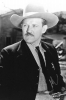

Country:United States, 52 minutes
Spoken languages:English
Genres:Action, Western
Director(s):Harry L. Fraser
Writer(s):Burl R. Tuttle
Video Codec:Unknown
Number: 182


Certification:NR
Storyline:
Chris Morrell, the guardian of half-Indian girl Nina, is helping her find her missing white father. so she can cash in on her late mother's oil lease. Outlaw Sam Black is after the girl and her father as well. Besides dealing with the Black gang, Morrell has to find another robber, Jim Moore, who switches clothes with him after he finds Chris unconscious from a fight with Sam Black. Along the way, he meets a lady who's the sister of Jim Moore, another bad hombre who's in cahoots with Jim Moore, and an old friend who takes in Nina and helps Chris locate Nina's father and fight off the various desperadoes
Cast: 


Medium: VHS tape,
Comments: Part of: John Wayne Western Collection Volume I
Loaned: No
Aspect ratio: Unknown